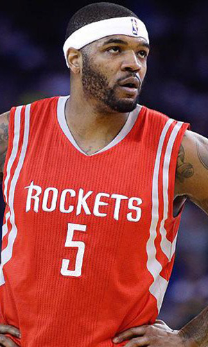

|  |
Матчи |
83 |
|
Передачи (всего/среднее) |
276 |
3.3 |
| В основе |
35 |
|
Подборы в защите (всего/среднее) |
377 |
4.5 |
| Время (всего/среднее) |
2294:26 |
27:39 |
Подборы в атаке (всего/среднее) |
153 |
1.8 |
| Очки (всего/среднее) |
1027 |
12.4 |
Подборы (всего/среднее) |
530 |
6.4 |
| 2-очковые броски (всего/среднее) |
342/759 |
4.1/9.1 |
Перехваты (всего/среднее) |
88 |
1.1 |
| 2-очковые броски (% реализации) |
45.1% |
|
Потери (всего/среднее) |
206 |
2.5 |
| 3-очковые броски (всего/среднее) |
72/228 |
0.9/2.7 |
Блокшоты (всего/среднее) |
115 |
1.4 |
| 3-очковые броски (% реализации) |
31.6% |
|
Блокшоты соперника (всего/среднее) |
48 |
0.6 |
| Штрафные броски (всего/среднее) |
127/255 |
1.5/3.1 |
Фолы (всего/среднее) |
228 |
2.7 |
| Джош Смит |
Штрафные броски (% реализации) |
49.8% |
|
Коэффициент полезности (всего/среднее) |
853 |
10.3 |